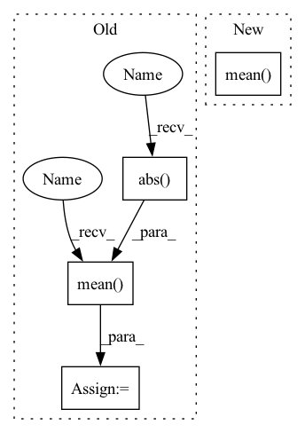

Pattern ID :10101

Before Change
delta = self.Rweight.detach() - w2
w3 = w2 + torch.abs(torch.sin(self.rotate)) * delta
self.Rotate = torch.mean(torch.abs(torch.sin(self.rotate)))
//* binarize
bw = BinaryQuantize().apply(w3, self.k.to(w.device), self.t.to(w.device))
if args.a32:
ba = a2
After Change
w = self.weight
w1 = w - w.mean([1,2,3], keepdim=True)
w2 = w1 / w1.std([1,2,3], keepdim=True)
a1 = a0 - a0.mean([1,2,3], keepdim=True)
a2 = a1 / a1.std([1,2,3], keepdim=True)
a, b = self.a, self.b
X = w2.view(w.shape[0], a, b)
if self.epoch > -1 and self.epoch % args.rotation_update == 0:
In pattern: SUPERPATTERN
Frequency: 4
Non-data size: 4
Instances
Fragment ID: 35883235
Project Name: lmbxmu/rbnn
Commit Name: 6c9607902cf8cf520ec24c6d6fdc7ee2b3f9f9b5
Time: 2020-09-07
Author: 791411501@qq.com
File Name: cifar/modules/binarized_modules.py
M Class Name: BinarizeConv2d
N Class Name: BinarizeConv2d
M Method Name: forward(2)
N Method Name: forward(2)
M Parent Class: nn.Conv2d
N Parent Class: nn.Conv2d
M File Name: cifar/modules/binarized_modules.py
N File Name: cifar/modules/binarized_modules.py
M Start Line: 32
M End Line: 57
N Start Line: 32
N End Line: 37
'>
Before Change
loss_label = optax.sigmoid_binary_cross_entropy(
logits=jnp.reshape(logits[:, 0], [-1, 1]),
labels=jnp.reshape(labels[:, 0], [-1, 1])).mean()
loss_bias = jnp.mean(jnp.abs(jax.nn.sigmoid(logits[:, 1]) - labels[:, 1]))
return loss_label + loss_bias
def create_train_state(hidden_sizes, output_size, input_shape, rng,
After Change
def cross_entropy_loss(*, logits, labels):
logits = jnp.reshape(logits, [logits.shape[0], -1])
labels = jnp.reshape(labels, [labels.shape[0], -1])
return optax.sigmoid_binary_cross_entropy(logits=logits, labels=labels).mean()
def create_train_state(hidden_sizes, output_size, input_shape, rng,
learning_rate):
'>
Fragment ID: 35883239
Project Name: google/uncertainty-baselines
Commit Name: 7bad540d9939531e204ea03e13655acdcd7a5a68
Time: 2022-08-16
Author: no-reply@google.com
File Name: experimental/shoshin/training.py
M Class Name: AnonimousClass
N Class Name: AnonimousClass
M Method Name: cross_entropy_loss(0)
N Method Name: cross_entropy_loss(0)
M Parent Class:
N Parent Class:
M File Name: experimental/shoshin/training.py
N File Name: experimental/shoshin/training.py
M Start Line: 49
M End Line: 55
N Start Line: 51
N End Line: 51
'>
Before Change
delta = self.Rweight.detach() - w2
w3 = w2 + torch.abs(torch.sin(self.rotate)) * delta
self.Rotate = torch.mean(torch.abs(torch.sin(self.rotate)))
//* binarize
bw = BinaryQuantize().apply(w3, self.k.to(w.device), self.t.to(w.device))
if args.a32:
ba = a2
After Change
def forward(self, input):
a0 = input
w = self.weight
w1 = w - w.mean([1,2,3], keepdim=True)
w2 = w1 / w1.std([1,2,3], keepdim=True)
a1 = a0 - a0.mean([1,2,3], keepdim=True)
a2 = a1 / a1.std([1,2,3], keepdim=True)
a, b = self.a, self.b
'>
Fragment ID: 35883238
Project Name: lmbxmu/rbnn
Commit Name: 6c9607902cf8cf520ec24c6d6fdc7ee2b3f9f9b5
Time: 2020-09-07
Author: 791411501@qq.com
File Name: imagenet/modules/binarized_modules.py
M Class Name: BinarizeConv2d
N Class Name: BinarizeConv2d
M Method Name: forward(2)
N Method Name: forward(2)
M Parent Class: nn.Conv2d
N Parent Class: nn.Conv2d
M File Name: imagenet/modules/binarized_modules.py
N File Name: imagenet/modules/binarized_modules.py
M Start Line: 32
M End Line: 57
N Start Line: 32
N End Line: 37
'>
Before Change
delta = self.Rweight.detach() - w2
w3 = w2 + torch.abs(torch.sin(self.rotate)) * delta
self.Rotate = torch.mean(torch.abs(torch.sin(self.rotate)))
//* binarize
bw = BinaryQuantize().apply(w3, self.k.to(w.device), self.t.to(w.device))
if args.a32:
ba = a2
After Change
def forward(self, input):
a0 = input
w = self.weight
w1 = w - w.mean([1,2,3], keepdim=True)
w2 = w1 / w1.std([1,2,3], keepdim=True)
a1 = a0 - a0.mean([1,2,3], keepdim=True)
a2 = a1 / a1.std([1,2,3], keepdim=True)
a, b = self.a, self.b
'>
Fragment ID: 35883236
Project Name: lmbxmu/rbnn
Commit Name: 6c9607902cf8cf520ec24c6d6fdc7ee2b3f9f9b5
Time: 2020-09-07
Author: 791411501@qq.com
File Name: cifar/modules/binarized_modules.py
M Class Name: BinarizeConv2d
N Class Name: BinarizeConv2d
M Method Name: forward(2)
N Method Name: forward(2)
M Parent Class: nn.Conv2d
N Parent Class: nn.Conv2d
M File Name: cifar/modules/binarized_modules.py
N File Name: cifar/modules/binarized_modules.py
M Start Line: 32
M End Line: 57
N Start Line: 32
N End Line: 37
'>
Before Change
metric += sklearn_metrics.mean_squared_error(y_true_los, y_pred_los)
elif metrics_strategy == "MAPE":
metric += sklearn_metrics.mean_absolute_percentage_error(y_true_los, y_pred_los)
metric += np.mean(
np.abs(y_true_outcome - y_pred_outcome)
* max_visits
* np.array(list(map(lambda x: sigma_func(x), y_true_los)))
)
if verbose:
print("LOS Score:", metric)
return metric
After Change
result = np.array(metric)
if verbose:
print("Early Prediction Score:", result)
return result.mean(axis=0)
'>
Fragment ID: 35883240
Project Name: yhzhu99/covid-ehr-benchmarks
Commit Name: fc9fcafdeae37b009acb4acf87682f0d86306e69
Time: 2022-06-29
Author: yhzhu99@gmail.com
File Name: app/core/evaluation/covid_metrics.py
M Class Name: AnonimousClass
N Class Name: AnonimousClass
M Method Name: multitask_los_metric(6)
N Method Name: multitask_los_metric(7)
M Parent Class:
N Parent Class:
M File Name: app/core/evaluation/covid_metrics.py
N File Name: app/core/evaluation/covid_metrics.py
M Start Line: 83
M End Line: 116
N Start Line: 119
N End Line: 142